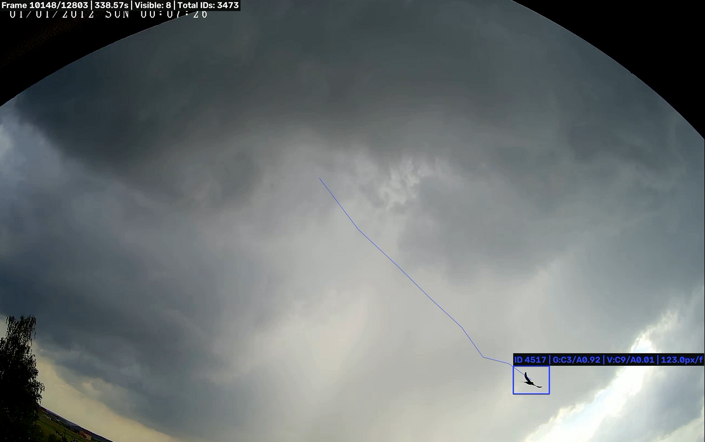
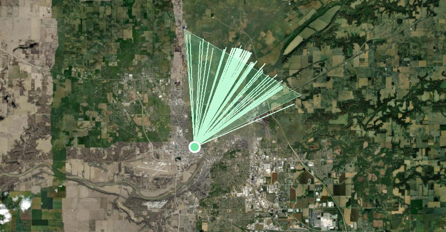
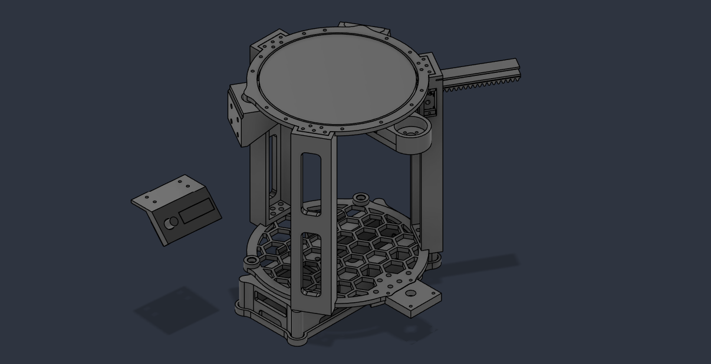
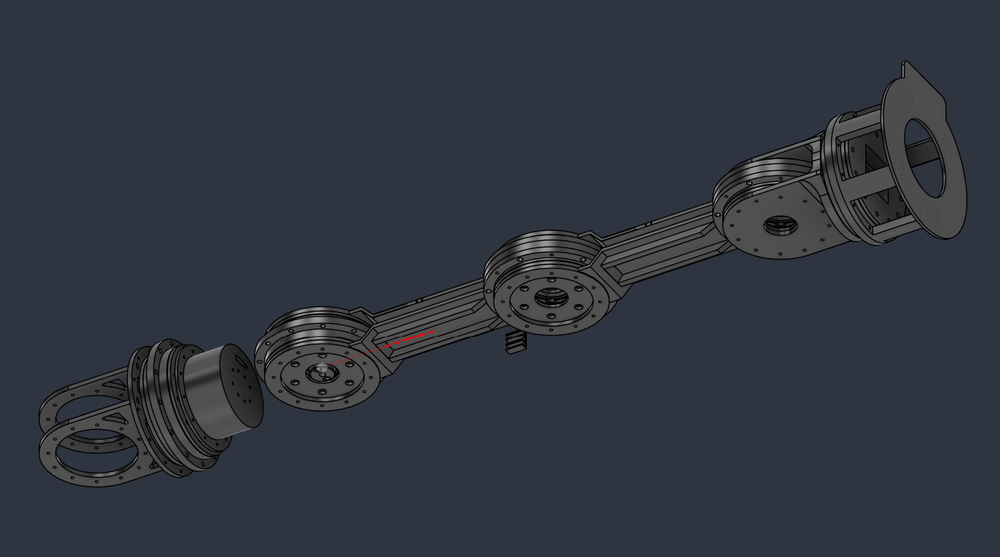

Computer Vision · Embedded Systems · ML
Hi, I'm Victor
Voznyuk.
Software Engineering student at Purdue building computer vision systems, hardware projects, and everything in between.
Project Timeline
2026 — Anomaly Detection · Computer Vision

↺ Click to read more
SEAQR Anomaly Detection Pipeline
DINOv2 · MOG2 · Kalman Tracking · PyTorch
SEAQR Anomaly Detection Pipeline
VIDEO INCOMING PLEASE GIMME A DAY OR SEVERAL
An unsupervised video outlier detection system designed to identify anomalous small moving objects — birds and insects — across recorded outdoor security camera footage. The pipeline combines MOG2 background subtraction, DINOv2 patch embeddings, PatchCore-style anomaly scoring, and Kalman filter tracking.
↺ Click to flip back
2026 — Software

↺ Click to read more
Multi-Camera Triangulation
Android APK · OpenCV · MOGv2 · Tailgate · Computer Vision
Multi-Camera Triangulation System
https://youtu.be/rX8Hf99RlCg
A aerial monitor system that usese cheap phones as nodes with frame differencing and kotlin tracking to identify flying objects and triangulate their positions. with a sufficient mesh, objects as small as 4 pixels wide can be reliably tracked using this network. The objects are viewable on the self hosted website uisng Tailgate and Docker.
↺ Click to flip back
2026 — Hardware

↺ Click to read more
Self Refilling Cup
Fusion 360 · Arduino · 3d Printing
Self Refilling Cup
Video loads automatically when flipped
Designed, modeled, and manufactured a self-refilling system for cups on my desk. Yes its more efficient than walking downstairs for water.
↺ Click to flip back
2026 — Robotics / Electronics (in progress)

↺ Click to read more
Robot Arm
Arduino · Fusion 360 · 3D Printing · Robotics
Robot Arm
Video Incoming gimme a day or a few
This project is on hold, as I am currently at Purdue, and don't have access to my 3d printer, but I did start prototyping. Designed my own cycloidal gearbox for more torque and higher precision. all models are original, made entirely by me.
↺ Click to flip back
Get In Touch
Find me
online.
Links to everything I'm working on and where to reach me.